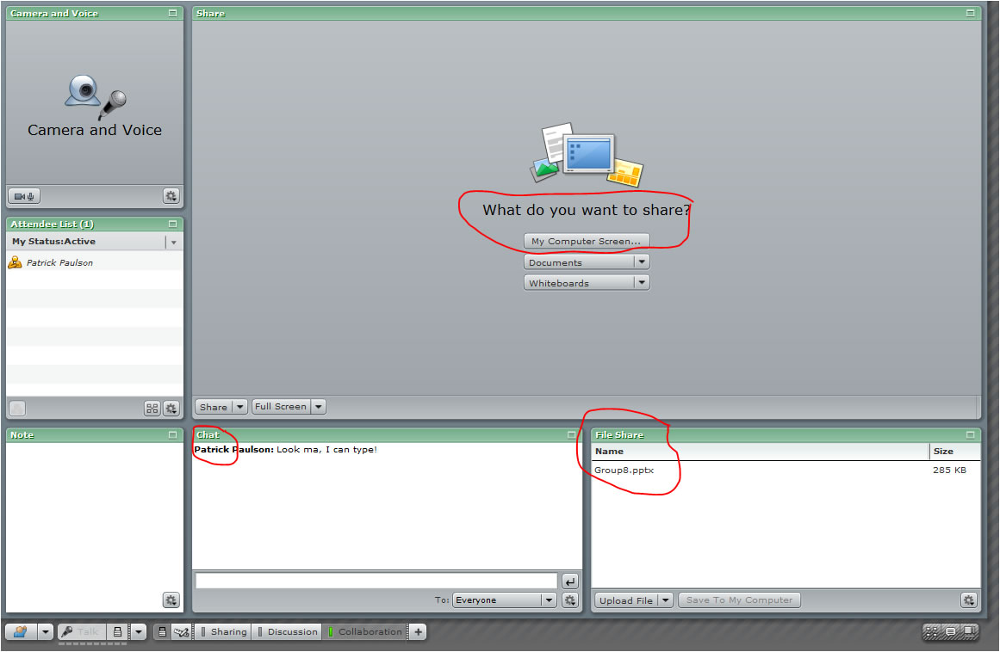
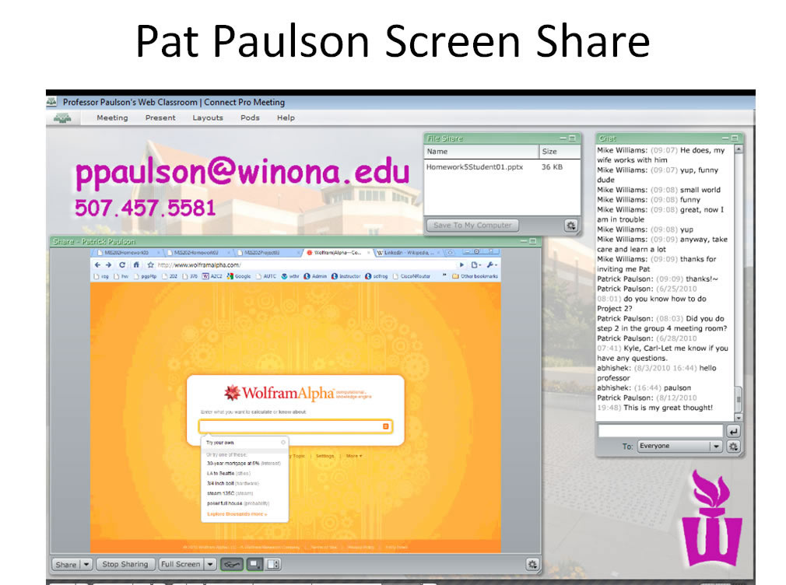

After completing this assignment you will be able to use a computer to
This assignment requires class attendance to both Tuesday and Thursday classes. Attendance will be taken each day, and any student not in class will receive a zero. There is no making up this assignment.
The purpose of this assignment is to learn to use and leverage the Internet to allow communications between geographically dispersed groups. Microsoft Skype, Adobe Connect, LinkedIn and text messaging via email are tools that can help you creatively communicate. Some considerations are:
This assignment will cover several basic collaboration methods, you are encouraged to explore on your own to find additional features that will make your life and present or future jobs easier.
The exercises in this assignment can be done in any order.
Conference Calls
Make sure you have installed Skype for Business/Lync on your laptop. Create an account if you do not already have one.
For this assignment set up a Skype conference call involving members of your D2L Summative05 group. You can arrange to call group members on their Internet Skype account, at their cell phone number or at both. It would be a good idea to try a combination of these two to see how things work. Spread out so that all participants are outside of voice range of each other. Use the study room, empty class rooms, your living space or whatever. For best results make sure to use either ear buds, or better yet, a headset. If you wish, try this several times, feel free to try it outside of class time.
Choose a topic before you attempt the conference call. Try something like 'the benefits of conference calling' or 'net neutrality' or some mutually agreeable business topic such as 'web conference calls' Each student must answer the following questions regarding the conference call.
1. (50) What were the best 2 factors in the conference call? Possible choices are voice delay, or lack thereof, call volume, clarity....
2. (50) What were the worst 2 factors in the conference call? Possible choices are voice delay, or lack thereof, call volume, clarity....
3. (50) Do you think a VOIP application like Skype is ready for general business use? What business uses do you envision? Ref: http://www.skype.com/intl/en/business/
Review the material on the SMS web page at: SMS info
List of worldwide SMS gateway domains: http://martinfitzpatrick.name/list-of-email-to-sms-gateways/ or: http://sms-gateway-service.com/?page_id=13
Feel free to use your email account to send a text message to your cell phone, if you have text messaging. Realize if you send an SMS via email that the receiver may be charged a fee depending on their text message contract.
MMS gateway domains: http://basicstate.com/htm/page.htm
4. (50) What are three ways that a business could make use of SMS via email for improving customer service, without creating SMS spam? Ref: http://en.wikipedia.org/wiki/Text_messaging#Text_message_spam
Online communications, collaboration and file sharing
Login to D2L to find your Summative05 group number and group members. Then check out this page to find your Meeting Room web address. The purpose of this exercise is to learn how to collaborate and share files using Adobe Connect. Your group will work to develop a PowerPoint presentation. Each group member must contribute the following screen shots taken from within your Adobe Connect meeting room.
The group decides the order in which members contribute to the presentation. Or the first person to get into the meeting room can begin the process.
If a group member or members are not in class (and will be penalized), contact them and tell them to do their three slides before the assignment is due, noting that they must download the PowerPoint presentation, contribute their screen shots/PowerPoint slides, and upload the completed file. Note that when each group member finishes adding their slides to the presentation, they take a copy of the PowerPoint presentation, print it as a .pdf file, and create a hyperlink below. Do not worry if a group member does not do their screen shots/PowerPoint slides-the rest of the group will not be penalized.
Your group meeting room should look like this, if not please let Professor Paulson know so that he can correct the Pod layout:  . Here is an example showing all three Pods in one screen shot (you will have 3 separate screen shots):  Save your presentation as a PowerPoint file.
(250) 5. Print your PowerPoint presentation as 'Ex3.pdf' to the ' ' folder.
Leverage your FaceBook skills to build your professional persona. Begin your career today. Sign up for a account.
Connect with me if you would like:
6. (50) What is the value to your career of a tool like Linked In? Ref: Wikipedia info on LinkedIn.
(50) 7. Make a screen shot of your LinkedIn home page Save the screen shot as "Ex4" in your ' ' folder.
Use a web browser to verify that you have published your website to https://classes.winona.edu/... Check that your name, StarID, email, class, semester, section and all of your answers are correct and visible. From the menu choose File>Print... and using "Microsoft Print to PDF" save a copy of this assignment as a .pdf file in your ' ' folder.
(50) 8. Save your file 'WebPage.pdf' to the ' ' folder.
Create one .pdf (portable document format) file from the screen shots that you have taken by following these steps.
(50) 9. Save your file 'ScreenShots.pdf' to the ' ' folder.
Use PDFill to merge the WebPage.pdf file with the ScreenShots.pdf file, and save it as 'Summative05.pdf' in ' ' folder.
(50) 10. Upload your file 'Summative05.pdf' to the D2L 'Summative05' Assignment folder.
Use a browser to view your completed and published website at: https://classes.winona.edu/... Ensure that you have linked this assignment on your home page. Note that your screen shots do not have to be completed to perform this step.